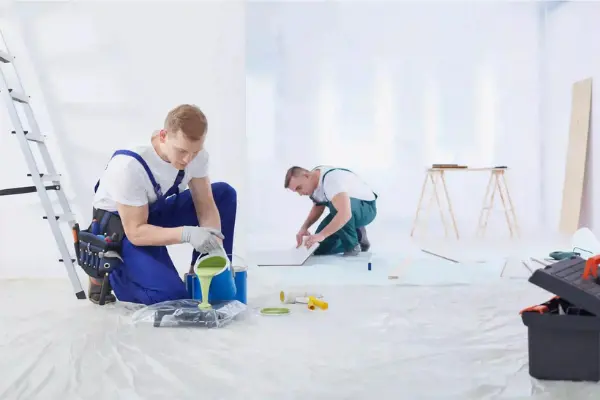
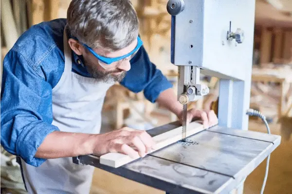
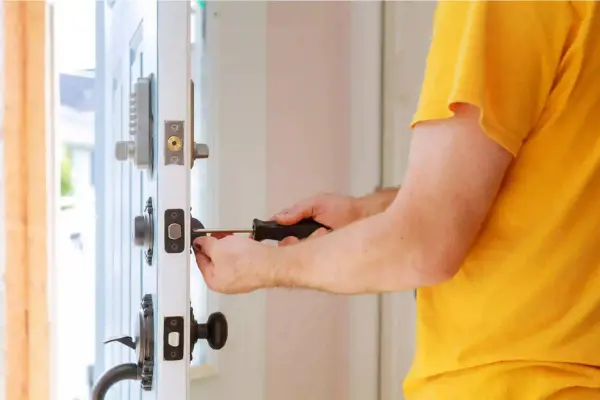

Serviços Oferecidos
Reparos elétricos
Reparos hidráulicos
Pintura

Instalação de móveis

Chaveiro



Bem-vindo à Empresa Tio Paulo Pequenos Reparos. Aqui você encontrará os melhores serviços para suas necessidades de reparo.
Anderson era um homem prestativo e habilidoso que sempre esteve disposto a ajudar seus vizinhos. Ele tinha um talento natural para consertar coisas e resolver problemas domésticos, e logo se tornou conhecido como o "marido de aluguel" da vizinhança. Sempre que alguém precisava consertar um vazamento, trocar uma lâmpada ou montar um móvel, lá estava Anderson para resolver a questão. Com o tempo, a demanda por seus serviços cresceu tanto que ele percebeu uma oportunidade de transformar sua habilidade em um negócio. Foi assim que surgiu a ideia de abrir sua própria empresa de pequenos reparos, oferecendo serviços de manutenção e consertos para casas e escritórios na região. Com dedicação e profissionalismo, Anderson expandiu sua clientela, contratou alguns ajudantes e começou a atender uma área maior. Sua empresa se tornou conhecida pela qualidade do serviço prestado e pela confiança que inspirava nos clientes. Agora, além de continuar ajudando a vizinhança, Anderson emprega outras pessoas da comunidade e contribui para o desenvolvimento local. Sua jornada é um exemplo de como uma habilidade especial pode se transformar em um negócio próspero, beneficiando não apenas o empreendedor, mas também a comunidade ao seu redor.
Entre em contato conosco preenchendo o formulário abaixo ou através do nosso WhatsApp.
⭐⭐⭐⭐⭐ Contratamos a empresa para pequenos reparos em casa e ficamos muito satisfeitos com a qualidade e o atendimento rápido e prestativo. Trabalhos realizados: Pintura interna, reparos em drywall, mudança de instalações, instalação de luminárias, revitalização de piso, raspagem e novo rejuntamento. Marina Costa Alphavile- Nova Lima
⭐⭐⭐⭐ A equipe fez toda a reforma do nosso apartamento com muita qualidade, cuidado com os detalhes e profissionalismo. Entregaram a obra no prazo combinado. Cumpiram tudo o que estava acordado no contrato. Seguiram as regras do condomínio e com relação a segurança na pandemia. Trabalhos realizados: Reforma da Cozinha, Pintura, Reparos de vazamentos e infiltração Rogerio S. Ferreira Cruzeiro- Nova Lima
⭐⭐⭐⭐A equipe fez toda a reforma do nosso apartamento com muita qualidade, cuidando dos detalhes e profissionalismo. Entregaram a obra no prazo combinado. Cumpriram tudo o que estava acordado no contrato. Seguiram as regras do condomínio em relação a segurança na pandemia. Gustavo Silveira Matadouro - Nova Lima⭐⭐⭐⭐Gostei muito, profissional que responde rápido no whatsapp, passa orçamento honesto. O trabalho é de muita qualidade, usa material de primeira. Serviços realizados: Pintura externa, interna e troca de pisos na varanda. Hugo Rocha Vila Passos Nova Lima